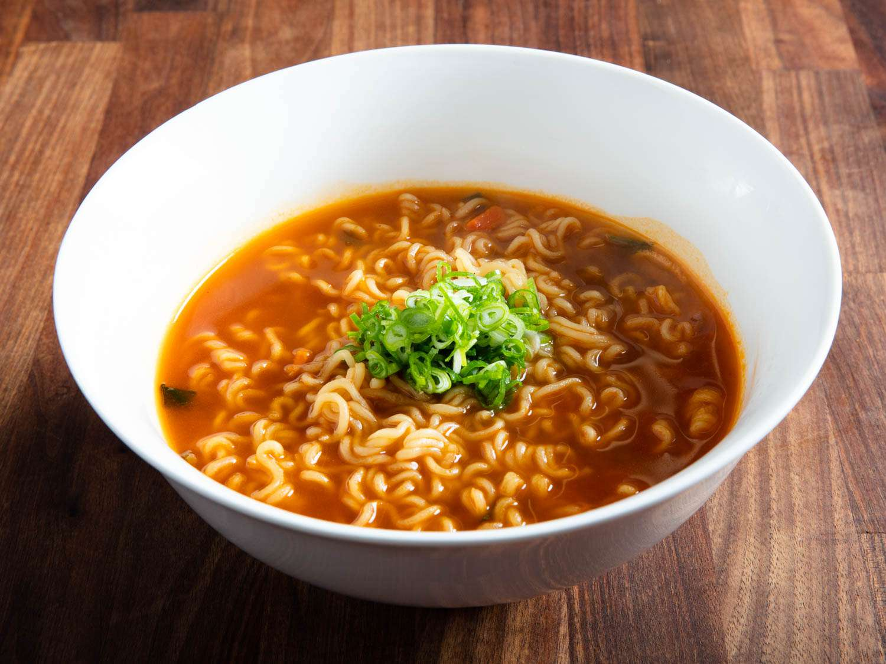

Ramyun

A classic Korean dish!
This is a go to Korean dish that is easy to prepare.
Ingredients
- Ramyun (Shin brand is best)
- Water
- Pot
Recipe instructions
- Boil water in pot
- Once water is boiling, add Ramyun and sauce pack
- Stir around until noodles cooked
- Enjoy tasty meal!
Return to home page